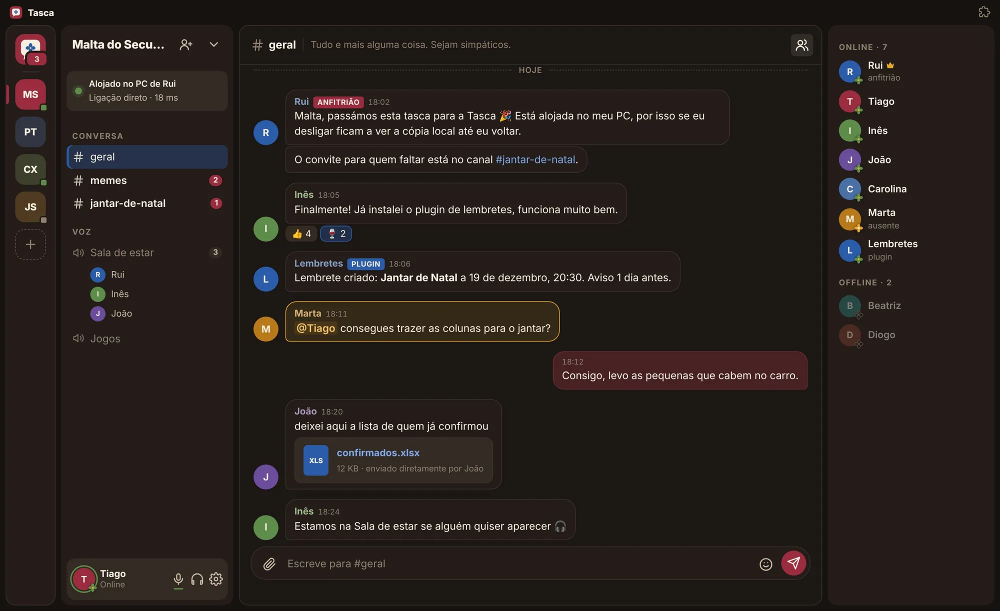
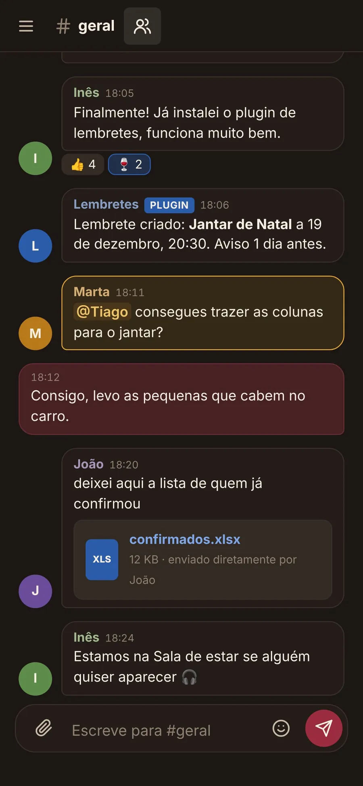
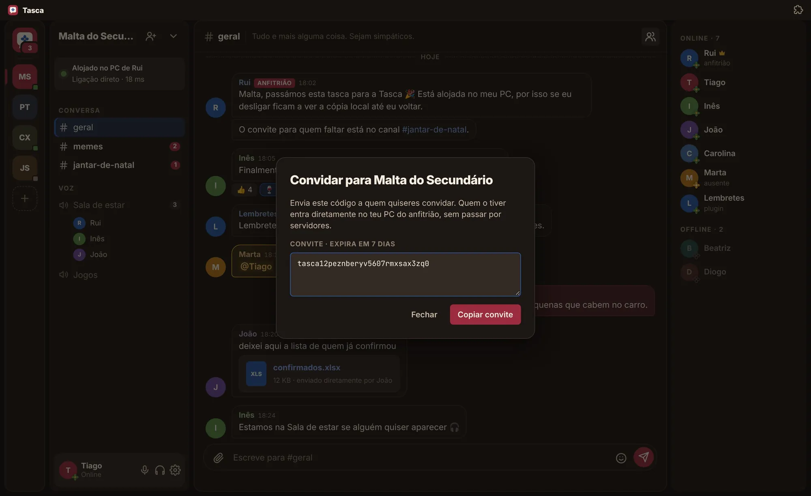
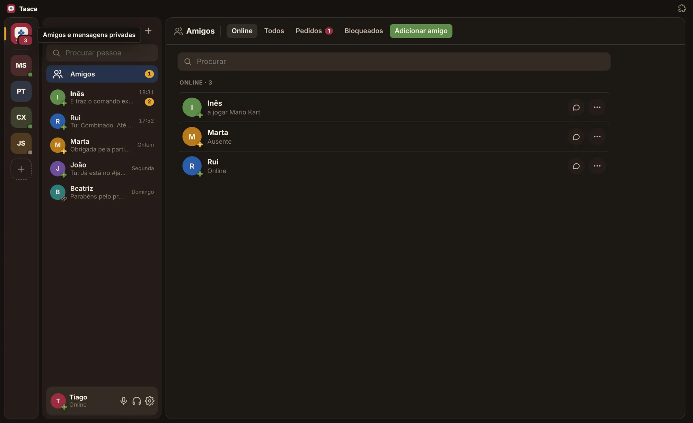

O teu grupo,
na tua tasca.
Mensagens, chamadas de voz e vídeo e partilha de ecrã com os teus amigos. Ponto a ponto, cifrado de ponta a ponta, e os teus grupos vivem no teu PC.
Grátis e de código aberto · Sem anúncios · Como instalar


Tudo o que um grupo precisa
Feita para amigos, equipas e comunidades pequenas que querem ser donas das suas conversas.
Grupos com canais
Canais de texto e de voz, organizados em categorias. Arrasta para ordenar, convida com um código.
Cifrado de ponta a ponta
Só tu e o teu grupo conseguem ler. Nem o servidor de contas, nem nós.
Voz sem ruído
Salas de voz sempre abertas, áudio Opus e supressão de ruído que tira ventoinhas e teclado.
Vídeo e partilha de ecrã
Liga a câmara ou partilha um jogo em ecrã inteiro. A placa gráfica faz o trabalho pesado.
Amigos e mensagens privadas
Adiciona amigos pelo @ID, vê quem está online e fala a dois, também cifrado.
PC e telemóvel
A mesma conta no Windows e no Android. Amigos, grupos e mensagens sincronizados.
O grupo vive no PC de quem o cria.
Não há uma empresa a guardar as vossas conversas. Quem cria o grupo é o anfitrião: o grupo fica no PC dele e os membros ligam-se diretamente, sempre que o router deixa.
- Cada membro guarda uma cópia do histórico
- Se o anfitrião mudar de PC, passa o grupo a outro membro
- Tudo o que acontece é assinado: ninguém se faz passar por ti

Bonita, simples e tua
Tema Madeira escuro ou Cal claro, mensagens em balões ou em lista, tamanho do texto à tua medida.




A tasca é tua. Muda o que quiseres.
Quase tudo na Tasca vai poder ser estendido: um tema novo, um comando para o chat, um botão a mais no perfil, um bot para o grupo, até a disposição do ecrã.
Os plugins da loja vão ser revistos e assinados pela equipa antes de chegarem a ti. Os teus podes carregar diretamente de uma pasta.
// Um separador novo na página Amigos window.tascaHooks.friendsTabs.push(() => [{ id: "aniversarios", label: "Aniversários 🎂", render() { return `<p>O Rui faz anos amanhã!</p>`; }, }]); // Uma opção nova no menu de cada pessoa window.tascaHooks.userMenu.push((pessoa) => [{ label: "Enviar um abraço", onClick: () =run: () => abracar(pessoa),gt; abracar(pessoa), }]);
Porquê a Tasca?
| Tasca | Apps de chat habituais | |
|---|---|---|
| Onde ficam as conversas | No PC do anfitrião e dos membros | Nos servidores da empresa |
| Quem consegue ler as mensagens | Só o grupo | Muitas vezes, também a empresa |
| Ficheiros | Vão direto entre PCs | Limite de tamanho, maior com subscrição |
| Partilha de ecrã em alta qualidade | Grátis | Muitas vezes paga |
| Plugins e temas | Oficiais, revistos e assinados | Proibidos ou não suportados |
| Código | Aberto (MIT / Apache 2.0) | Fechado |
| Anúncios e venda de dados | Nunca | Depende |
Pronto em dois minutos
Descarrega e instala
Corre o instalador. Se o Windows avisar, carrega em «Mais informações» e depois em «Executar mesmo assim».
Cria a conta
Escolhe um nome, um @ID e uma palavra-passe. Guarda as 12 palavras de recuperação num sítio seguro.
Junta a malta
Cria um grupo e envia o convite aos teus amigos, ou cola o convite que recebeste.
Puxa uma cadeira.
Descarrega a Tasca e começa a falar com a tua malta.